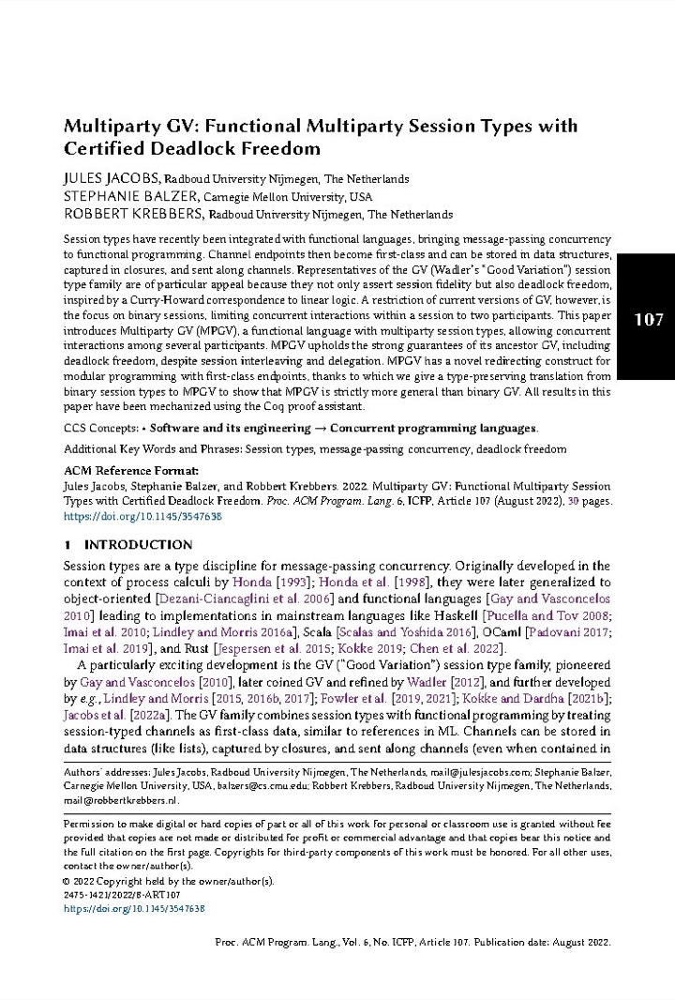

GV-style session types bring deadlock-free message passing to functional programming, but only between two participants per session. Multiparty GV (MPGV) allows sessions among several participants and keeps deadlock freedom despite session interleaving and delegation. A redirecting construct gives a type-preserving translation from binary session types, so MPGV is strictly more general. All results are mechanized in Coq.

Read the paperSession types have recently been integrated with functional languages, bringing message-passing concurrency to functional programming. Channel endpoints then become first-class and can be stored in data structures, captured in closures, and sent along channels. Representatives of the GV (Wadler’s “Good Variation”) session type family are of particular appeal because they not only assert session fidelity but also deadlock freedom, inspired by a Curry-Howard correspondence to linear logic. A restriction of current versions of GV, however, is the focus on binary sessions, limiting concurrent interactions within a session to two participants. This paper introduces Multiparty GV (MPGV), a functional language with multiparty session types, allowing concurrent interactions among several participants. MPGV upholds the strong guarantees of its ancestor GV, including deadlock freedom, despite session interleaving and delegation. MPGV has a novel redirecting construct for modular programming with first-class endpoints, thanks to which we give a type-preserving translation from binary session types to MPGV to show that MPGV is strictly more general than binary GV. All results in this paper have been mechanized using the Coq proof assistant.
@article{jacobs2022mpgv,
title = {Multiparty GV: functional multiparty session types with certified deadlock freedom},
volume = {6},
ISSN = {2475-1421},
url = {https://doi.org/10.1145/3547638},
DOI = {10.1145/3547638},
number = {ICFP},
journal = {Proceedings of the ACM on Programming Languages},
publisher = {Association for Computing Machinery (ACM)},
author = {Jacobs, Jules and Balzer, Stephanie and Krebbers, Robbert},
year = {2022},
month = Aug,
pages = {466--495}
}